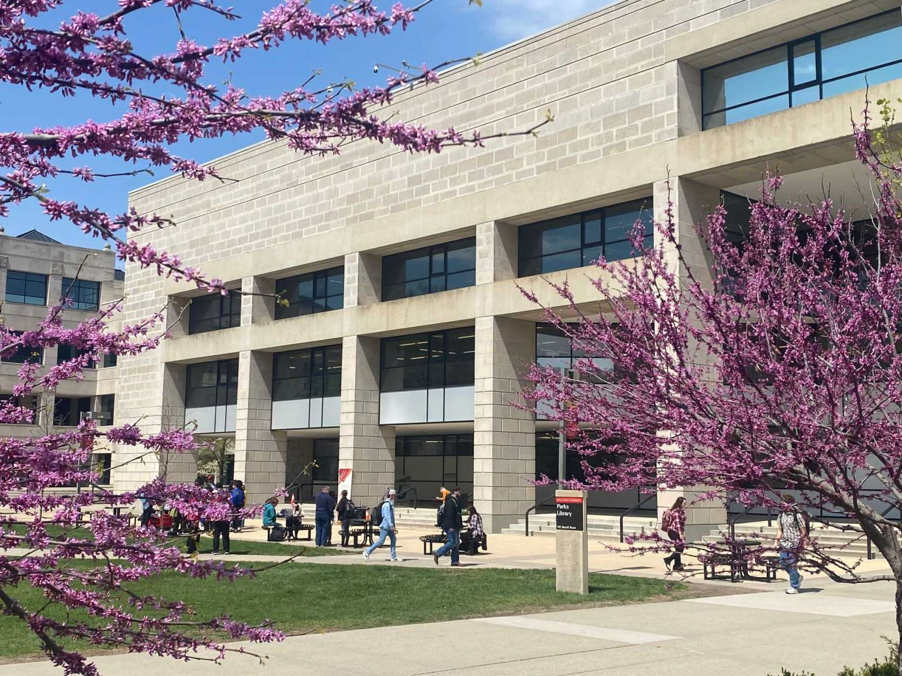
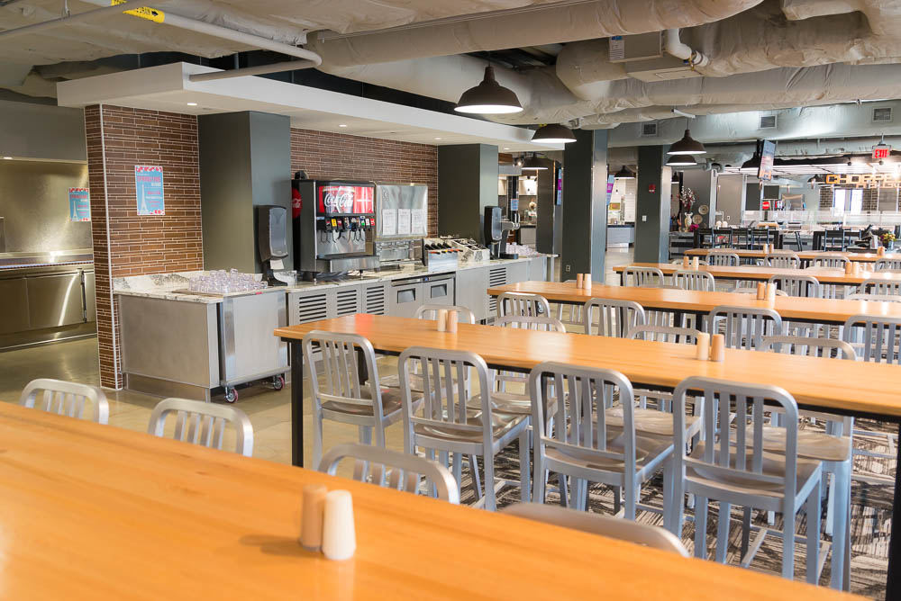

Memorial Union
The Memorial Union at Iowa State University (ISU) established in 1928 to honor World War I alumni, holds a special place in the heart of the campus, serving as a central hub for students, faculty, and visitors alike. With a diverse range of amenities, including meeting rooms, dining options, and student services, the Memorial Union remains a vital and dynamic part of the Iowa State University experience, fostering connections and enriching the university community. The union, often referred to simply as "the MU," stands as a symbol of tradition, community, and academic life.
Beardshear Hall
Beardshear Hall, a prominent landmark at Iowa State University, stands as a testament to the institution's rich history and academic prominence. Named after the university's first president, William M. Beardshear, the building has been a cornerstone of campus life since its construction in 1906. Its grand architectural design, featuring neoclassical elements and a distinctive clock tower, adds to the university's charm. Today, Beardshear Hall continues to play a central role on campus, housing administrative offices and symbolizing Iowa State's commitment to education and tradition.
Campanile
The Campanile at Iowa State University, completed in 1899, stands as an iconic symbol with a 110-foot tower housing 50 bells. Serving both a functional and symbolic role, it memorializes former professor Margaret MacKay and adds a touch of charm to the campus with its melodious chimes. This historic structure remains a timeless symbol of tradition and community at Iowa State University.
Parks Library
Parks Library at Iowa State University stands as a dynamic hub for academic exploration and research. Named after Charlotte E. Parks, the library's modern design houses extensive print and digital resources, providing an essential space for students and researchers alike. From collaborative study areas to state-of-the-art technology, Parks Library not only supports the diverse needs of the ISU community but also fosters a culture of intellectual engagement and learning at the heart of the campus.

Dining
Iowa State University's dining halls are integral to the campus experience, offering students diverse and nutritious culinary options. With a commitment to quality and sustainability, the dining services provide a range of meal plans accommodating various dietary preferences. The welcoming and communal atmosphere within these halls fosters connections among students while enjoying freshly prepared meals. Beyond nourishment, the dining halls contribute to the vibrant campus culture, creating spaces where students can socialize, collaborate, and forge lasting memories.

ISU creamery
The ISU Creamery delights the campus community with its delectable dairy products. Operating under the Department of Food Science and Human Nutrition, the creamery is renowned for its commitment to quality and tradition. Students and visitors flock to the creamery to savor a diverse array of handcrafted ice creams, cheeses, and other dairy delights, all produced using locally sourced ingredients. Beyond its delectable offerings, the ISU Creamery also serves as an educational hub, providing students with hands-on experience in dairy production and enhancing the overall culinary and agricultural learning experience at Iowa State University.